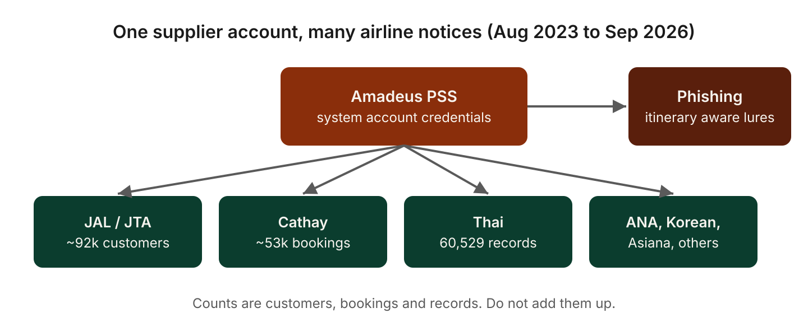

Amadeus Booking Data Breach: What Airlines Should Check Next
Japan Airlines said Amadeus notified it on 23 October 2026 that unauthorized access to Amadeus systems occurred between 10 August 2023 and 23 September 2026. About 92,000 JAL Group customers were in scope. Most records involved booking codes, names, dates, routes, and travel class. About 2,000 also included contact details, passport numbers, nationality, and frequent flyer data. JAL reported no evidence that credit cards or passwords were taken, and said operations were unaffected.

That alone would be a serious supplier incident. It is not alone.
Public notices and reputable reporting tied the same Amadeus problem to other carriers. Business Traveller summarizes overlapping disclosures for ANA, Cathay Pacific, and others, with Cathay citing roughly 53,000 affected bookings. On 9 November, Thai Airways disclosed about 60,529 passenger records potentially accessed through the supplier, with the same 10 August 2023 to 23 September 2026 window. Korean Air and Asiana reported booking references exposed after Amadeus notified them on 20 October.
Amadeus posted a statement on 1 October saying it had found a vulnerability affecting a travel booking display environment that made certain booking display data accessible, and that it had no evidence payment or financial data was accessed. Cathay Pacific’s notice is more specific about the how: an unauthorized party used login credentials assigned to an Amadeus system account. ANA relays that Amadeus invalidated those credentials and found no sign of ransomware or of data being altered. Nobody has publicly said who used the credentials or how they were obtained. Stick to what each source claims; do not invent a single root cause narrative beyond that.
The defender angle is not “airlines are special”
If you are not an airline, you still own the pattern:
- A concentrated SaaS or platform vendor holds identity rich records for many customers.
- Access persists for years before notifications fan out.
- The leaked fields are perfect for convincing fraud even when payment cards are absent.
Name + itinerary + PNR is enough to build a fake “rebook your flight / pay the fare difference” lure that beats most generic phishing templates. Passport fields raise the stakes further for a subset of victims.
What security teams should do even if Amadeus is not your vendor
Vendor inventory reality check
- Which suppliers hold customer travel, identity documents, or booking references?
- Which of those have shared multi tenant admin or support interfaces?
- How fast can the vendor name affected record counts and fields?
Detection around fraud, not only around the breach notice
- Spike detection on password reset and support ticket themes mentioning flights, PNR, or passport updates
- Brand monitoring for lookalike airline or travel domains registered near disclosure dates
- Call center scripts that authenticate customers without oversharing booking details the caller already “knows”
Passenger and employee guidance that is specific
- Expect phishing that cites real itinerary fragments
- Do not pay fare difference requests from unexpected channels
- Use official apps/sites bookmarked earlier, not links in messages
- Treat passport and frequent flyer number requests as high risk
Airlines that already contacted customers, including JAL’s warning about deceptive emails, calls and sites, are doing the necessary messy part. Corporate security teams supporting travelers should amplify that without adding unverified technical claims.
Controls for platform customers (airlines and large OTAs)
If you consume a shared passenger service system:
- Demand written scope: time window, fields, authentication mechanism abused, and containment actions
- Require credential resets for vendor side accounts that can view bookings, plus monitoring rules for anomalous booking lookups
- Reduce field exposure in day to day tools. Support staff do not always need full passport numbers on screen.
- Log and review high volume PNR lookups from support and partner identities
- Contract for notification timelines measured in days, not weeks after containment
Thai Airways’ notice says Amadeus cancelled the account used for the access, changed the affected passwords and strengthened monitoring. That is necessary. Customers still need evidence of continuous detection for bulk enumeration style access, not only password resets after the fact.
What not to overclaim
Do not total every airline’s numbers into one global victim count. Different disclosures mix customers and bookings, and people fly multiple carriers. Do not claim payment card theft when the published notices say otherwise. Do not invent an APT name where reporting has not assigned one.
Corporate travel security add on
Security teams that manage traveling executives should assume itinerary fragments may already be in hostile hands for some carriers. Practical moves:
- Prefer official carrier apps for changes
- Watch for invoice and rebooking lures that cite real flight times
- Use travel desk callbacks instead of email reply chains for expensive changes
- Flag expense systems for duplicate fare difference payments after disclosure weeks
This is fraud operations work as much as cyber. Bring finance and travel desk into the same briefing.
Checklist
- Map suppliers that store itinerary and identity document fields
- Refresh traveler phishing guidance with PNR and passport themes
- Tune fraud and help desk detection for itinerary aware social engineering
- Ask critical travel vendors for access anomaly monitoring status
- Review how much sensitive traveler data appears in internal support UIs
- Brief travel desk and finance on fare difference scam patterns
A multi year window on a shared reservation platform is a supplier risk story and a fraud enablement story at the same time. Patch theater does not apply. Identity rich data did.
Sources
- Amadeus: statement, 1 October 2026
- BleepingComputer: Japan Airlines suffers third party data breach exposing passenger info
- Business Traveller: major airlines report Amadeus breach
- AeroCorner: Cathay Pacific says Amadeus breach hit about 53,000 bookings
- Thai Airways: Amadeus reports unauthorized access to THAI passenger data (9 Nov 2026)
- Escudo Digital: Amadeus incident at Korean Air, Asiana, JAL and ANA